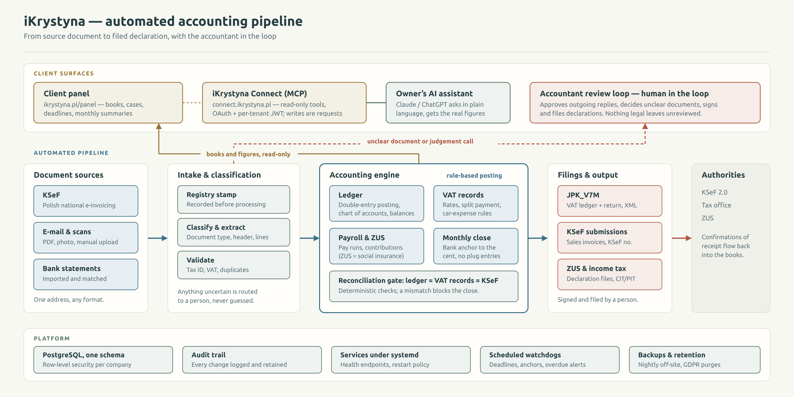
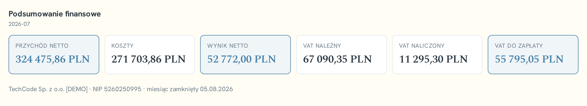
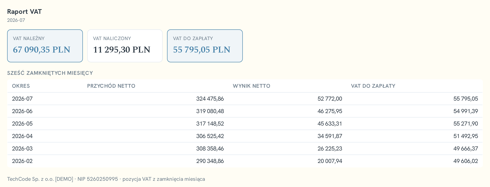

Registered company
AutoOffice Sp. z o.o.
ul. Św. Wojciecha 2/9
45-015 Opole
Poland
ul. Św. Wojciecha 2/9
45-015 Opole
Poland
AutoOffice Sp. z o.o. is a Polish software company based in Opole. It writes and operates its own software, and it builds software that connects other companies’ systems to the AI assistants their people already use.
iKrystyna is AutoOffice’s own product for automated accounting and the company’s core business. It is a service that companies subscribe to, not a project delivered once: AutoOffice writes it, hosts it, operates it and answers for it. Over twenty small and mid-size companies are registered on it. The connector platform described in this dossier is the same one that serves it.
Alongside the product, AutoOffice carries out bespoke AI integration work for a small number of established mid-size companies. That work is done under non-disclosure, which is why the clients are not named here.
Our speciality is connectors: software that lets a company’s own AI assistant — Claude, ChatGPT or Microsoft Copilot — work safely with that company’s business systems. They are built on the Model Context Protocol (MCP), an open, published standard for connecting AI assistants to external systems and data. Because the protocol is open and not owned by AutoOffice, a connector is not tied to one assistant, one vendor or one supplier.
A connector sits between the assistant a company already pays for and the system where its work actually lives. It is the place where sign-in, permissions and the audit trail are enforced.
All three run the same server framework on the Model Context Protocol, the same sign-in and role model, and AutoOffice’s shared result-card library.
| Connector | Domain | Built for |
|---|---|---|
| iKrystyna Connect | Accounting | AutoOffice’s own accounting service — the owner of a company asks about their own books and gets figures from the live ledger. |
| Vendo Connect | ERP | CFI, the maker of the Vendo ERP system — users of Vendo work with ERP data through an AI assistant. |
| LC Connect | Lead intelligence | Laser Components — finding, enriching and organising leads. |
The customer keeps its own AI subscription and its own choice of assistant. AutoOffice charges no per-user fees and resells no AI capacity. The connector’s source code lives in a repository the customer controls, and the data stays in the customer’s system of record.
iKrystyna is AutoOffice’s own software product and its core business: statutory accounting for Polish limited liability companies (sp. z o.o.), run on software AutoOffice built itself. Documents go to one e-mail address in any format; back comes a single message: what is missing, what it blocks, by when. Books, VAT, payroll, declarations and deadlines are kept by the system; an accountant reviews what the law or judgement requires. More than twenty companies are registered.
Documents arrive from KSeF (Poland’s national e-invoicing system), from e-mail and scans, and from banks. Each is stamped into a processing registry before it is touched; extraction reads type, header and lines, then tax-ID, VAT-rate and duplicate checks run. Posting into the double-entry ledger is deterministic: a rule set and account dictionary, not a model guess. Payroll covers all Polish contract types and computes ZUS (state social insurance) contributions; bank statements are matched against invoices.
Month-end is gated: the bank account must reconcile to the statement to the cent, and ledger, VAT records and KSeF must agree. Only then are the JPK_V7M file (the monthly VAT ledger and return), KSeF submissions and ZUS and income-tax declarations generated. Anything ambiguous goes to a person, every outgoing message is human-approved, and a person signs and files the declarations.

Connect is an MCP server that lets the owner query their own books from Claude or ChatGPT in plain language: what is due this month, what sits in the KSeF inbox, last month’s profit and loss, overdue receivables, the state of the close, whether a counterparty is on the Ministry’s VAT white list. Answers are figures and interactive widgets built from the live ledger, not the model’s general knowledge. Forty-five tools are registered, read-only by design; issuing a sales invoice is the one exception, a prepare → confirm → issue sequence. Every other change is an audited request to the office.
Connect is built on the same platform as Vendo Connect and LC Connect — the same server framework on the Model Context Protocol, the same OAuth sign-in and role model, an audit trail in each, and AutoOffice’s shared result-card library for everything the assistant displays. It differs only where the business does: which system it reads and which questions it answers.
The two figures below are answers returned by iKrystyna Connect inside an AI assistant. They are result cards built from the ledger: the assistant does not compute or estimate the numbers, it asks the connector for them and renders what comes back. The interface is shown in Polish, as deployed.


Beside its own product, AutoOffice carries out bespoke AI integration work for a small number of established mid-size companies. That work is done under non-disclosure.
CFI, the maker of the Vendo ERP system, is a long-standing client of AutoOffice.
For CFI, AutoOffice develops applied-AI solutions around the ERP. Among them is Vendo Connect, the connector that lets users of Vendo ERP work with their data through an AI assistant.
Vendo Connect is not a reporting add-on attached to the side of the ERP. It reaches across the system’s main areas and it writes as well as reads: more than a hundred operations are registered, covering the work people do in the ERP every day rather than a read-only summary layer on top of it.
Writing is not a side channel. Every change runs inside the ERP’s own transaction: the assistant opens a transaction, makes the change and closes it, and the ERP tracks the change and rolls the whole transaction back if it is not completed properly. Permissions come from the ERP as well. The connector reads the signed-in user’s own permissions from Vendo and offers only the operations that user is entitled to — and Vendo enforces them again, server-side, on every call.
| Sign-in | Through the customer’s own identity provider. No separate password estate. |
| Permissions | Role-based. What the assistant may see and do follows the role of the person asking. |
| Audit trail | Every change is recorded, including attempts that were refused. |
| Backups | Nightly. |
| Monitoring | Automated: every five minutes a monitor signs in and runs a query, so a failure is found by us before it is reported by a user. |
| Source code | Held in the customer’s own repository. |
| Commercial terms | A flat monthly service fee with included development hours. No per-user fees. |
| Exit | Without lock-in. |